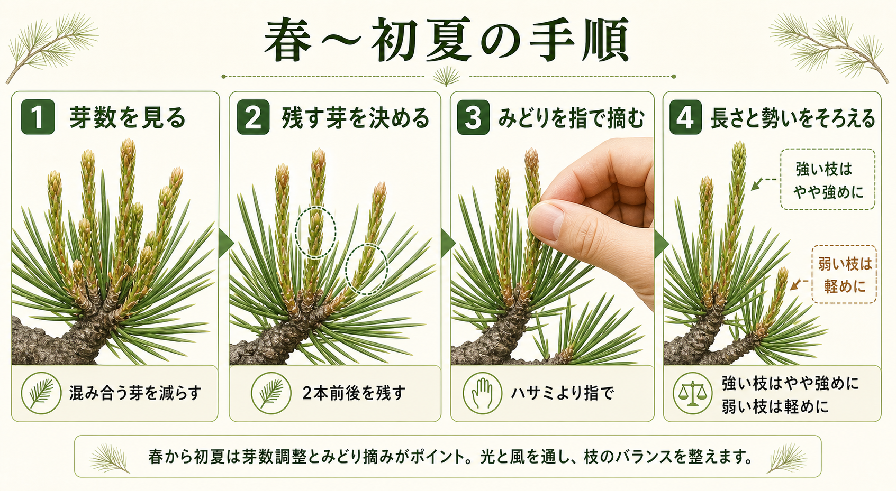
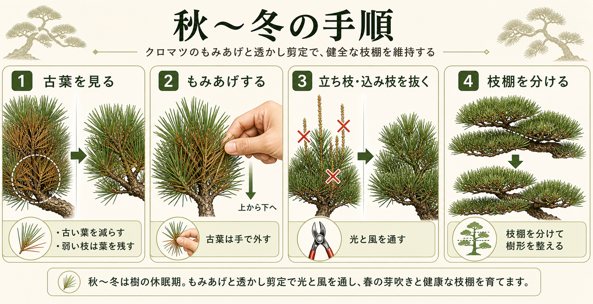

葉を残して切る
公園協会や剪定資料でも、葉のない位置まで切ると枯れ込みやすいとされる。黒松は広葉樹ほど自由に戻り芽を出さないため、 枝を残すときは必ずどこかに葉や若い枝を残す意識が必要になる。
黒松の剪定は、1回で形を決める作業ではなく、春の芽数調整とみどり摘み、秋〜冬のもみあげと透かし剪定を積み重ねて 樹形を保つ管理である。このページでは、庭木や庭仕立ての黒松を主対象に、時期ごとの作業内容、手順、注意点を図解つきで整理する。
このページの対象
主に地植えの黒松、庭木、庭園樹、庭仕立ての松を想定している。盆栽で行う強い芽切りや細密な針金成形とは前提が異なるため、 ここでは家庭園芸で再現しやすい管理を中心にしている。
最初に押さえたい3原則
1. 月日だけでなく、芽の伸び方と葉の硬さで作業時期を決める。
2. 葉のない場所まで深く切ると、松は戻り芽が出にくく枯れ込みやすい。
3. 崩れた樹形を一度で戻そうとせず、2〜3年かけて整える方が安全である。
地域差が大きいため、暖地では早く、寒冷地では遅くなる。実際の判断では、芽がふくらんだか、みどりが柔らかいか、 古葉が目立ち始めたか、といった状態を見る方が失敗しにくい。

| 時期の目安 | 主な作業 | 目的 | 強くやり過ぎない理由 |
|---|---|---|---|
| 春 | 芽かき、芽数調整 | 混み合う芽を減らし、枝先の数と向きを整える | 芽数を減らし過ぎると枝先が寂しくなり、樹勢差も広がりやすい |
| 初夏 | みどり摘み | 新梢の長さを抑え、枝先の勢いをそろえる | 遅過ぎると芽が硬くなり、途中切りで見た目も乱れやすい |
| 真夏 | 基本は養生と観察 | 高温期の消耗を抑え、木を弱らせない | 強剪定で日焼け、乾燥、樹勢低下を招きやすい |
| 秋〜冬 | もみあげ、透かし剪定 | 古葉を減らし、光と風を通し、枝棚を整える | 一度に抜き過ぎると葉量不足になり、翌春の芽吹きが弱る |
黒松は剪定に比較的耐えるが、どこでも切ってよい樹木ではない。葉を残して切る、急に小さくし過ぎない、 強い枝と弱い枝を同じように扱わない、という3点が特に重要である。
公園協会や剪定資料でも、葉のない位置まで切ると枯れ込みやすいとされる。黒松は広葉樹ほど自由に戻り芽を出さないため、 枝を残すときは必ずどこかに葉や若い枝を残す意識が必要になる。
樹形が崩れていても、大枝を一度に落として急に小さくすると、見た目だけでなく樹勢も乱れやすい。 庭木資料では、2〜3年かけて少しずつ整える方が安全とされる。
樹冠の上部や外周は強くなりやすく、内側や下枝は弱くなりやすい。芽数や葉数を全て同じように減らすと、 さらに樹勢差が広がるので、強い枝はやや強め、弱い枝は軽めが基本である。
黒松の春管理は、芽の数を整理し、初夏のみどり摘みで伸び方をそろえる流れで考えると分かりやすい。 関東以西の平地ではおおむね 4〜6月が中心だが、年や地域で前後する。

春に芽が複数まとまって立ち上がったら、まず混み具合を見る。内向きの芽、重なって将来込みやすい芽、明らかに不要な芽から減らし、 ふつうは2本前後を残すイメージで整理する。
みどりが伸びて、まだ柔らかいうちに長さを調整する。強い枝ではやや強めに摘んで伸びを抑え、弱い枝では軽めにして葉量を確保する。 庭木では「全て同じ長さ」よりも「樹全体の勢いをそろえる」ことを優先すると失敗しにくい。
真夏は高温と乾燥で木が消耗しやすい時期である。暖地では芽つぶしや地域独自の手入れもあるが、家庭の庭木では 強い作業を標準にしない方が安全である。
枯れ枝や明らかな徒長枝の整理にとどめ、樹冠を急に透かし過ぎない。古葉を急に減らすと、幹や内枝が日焼けし、 乾きやすくなることがある。
風通しを良くしたい場合も、夏は最小限にとどめ、本格的な整枝は秋〜冬に回す方が扱いやすい。
黒松は乾燥に比較的強いが、鉢上がり直後や根が傷んだ木は別である。高温乾燥でハダニが出やすくなるため、 葉色、葉のつや、枝先の勢いを見て、必要なら散水環境や風通しを整える。
秋から冬の作業は、古葉を減らして光と風を通し、立ち枝・込み枝・逆さ枝を整理して、翌春の芽吹きにつなげる段階である。 関東以西ではおおむね 10月後半〜2月頃が中心になる。

古い葉や込み過ぎた葉を手で外し、枝の内側まで光が入るようにする。弱い枝では葉を残し気味にし、 強い枝や頂部ではやや多めに減らして勢いを抑えるのが基本である。
立ち枝、逆さ枝、絡み枝、内向き枝、重なり枝を整理し、枝棚の層が見えるようにしていく。庭木の黒松では、 面で刈り込むよりも、不要枝を根元で抜いて流れを見せる方が自然である。
黒松は「切れば切るほど整う」樹木ではない。特に、葉のない位置への切り込みと、勢いの弱い枝の切り過ぎは失敗の原因になりやすい。
きれいに見せようとして芽を減らし過ぎると、枝先の厚みが失われ、後から枝棚を作り直しにくくなる。 迷う場合は、1年で仕上げるより「来年も使える枝を残す」方を優先する。
頂部と下枝、外周と内側では勢いが違う。弱い枝で強くみどり摘みやもみあげをすると、その枝だけ衰えやすい。
夏の強剪定は、日焼けと乾燥を招きやすい。とくに今まで陰だった幹や内枝が急に露出すると傷みやすい。
黒松は広葉樹ほど自由に戻り芽を出さない。葉のない位置で切ると、その先が枯れ込むリスクが高いので注意が必要である。
手順そのものより、作業前に何を見るか、作業後に何を観察するかで仕上がりは変わる。特に下枝まで光が届いているかは重要である。
| 確認すること | 作業前 | 作業後 |
|---|---|---|
| 芽や葉の密度 | どこが強く、どこが弱いかを見る | 強弱差が少し縮まったかを確認する |
| 下枝への光 | 樹冠の上部がふさがっていないか確認する | 下枝まで光と風が通るかを見る |
| 枝の流れ | 立ち枝、逆さ枝、絡み枝の位置を把握する | 枝棚が層になり、流れが見えるかを確認する |
| 切り過ぎの有無 | 一度で仕上げようとしていないか自問する | 葉量が極端に減っていないか、弱枝を傷めていないかを見る |
このページは黒松の管理と剪定に絞っている。植物ホルモンの基礎から読みたい場合は、下のページも合わせて使える。
時期や作業名は日本の庭木管理資料を中心に整理し、危険な深切りを避ける点や、樹形を数年かけて戻す考え方も反映した。
クロマツのワンポイント解説。冬の枝透かしと春のみどりつみ、葉のない位置まで切る危険性を確認した。
マツの主要作業を「ミドリ摘み」「剪定」「葉むしり」と整理し、急激な剪定を避けることや葉を残して切る考え方を参照した。
https://www.sapporo-park.or.jp/kikin/wp-content/uploads/pdf/sukusuku_21.pdf
春のみどり摘み、秋のもみあげが黒松の年2回の代表的作業であることを確認した。
https://www.thr.mlit.go.jp/noshiro/douro/noshirokokudou_douro/vsp/kuromatu/main.html
庭木としてのクロマツで、5〜6月のみどり摘み、10月〜翌春のもみあげ、地域差への注意点を整理する際の補助資料として使った。
浜離宮恩賜庭園の見学会記事から、秋冬の整枝で立ち枝・逆さ枝・絡み枝を整理し、光と風を通す考え方を補足した。
https://tokuhain.chuo-kanko.or.jp/archive/2013/11/post-1813.html
ページ本文は上記資料をもとに、庭木としての黒松へ使いやすい形に再構成している。地域や樹勢で適期はずれるため、 実際の作業では芽と葉の状態を優先して判断したい。